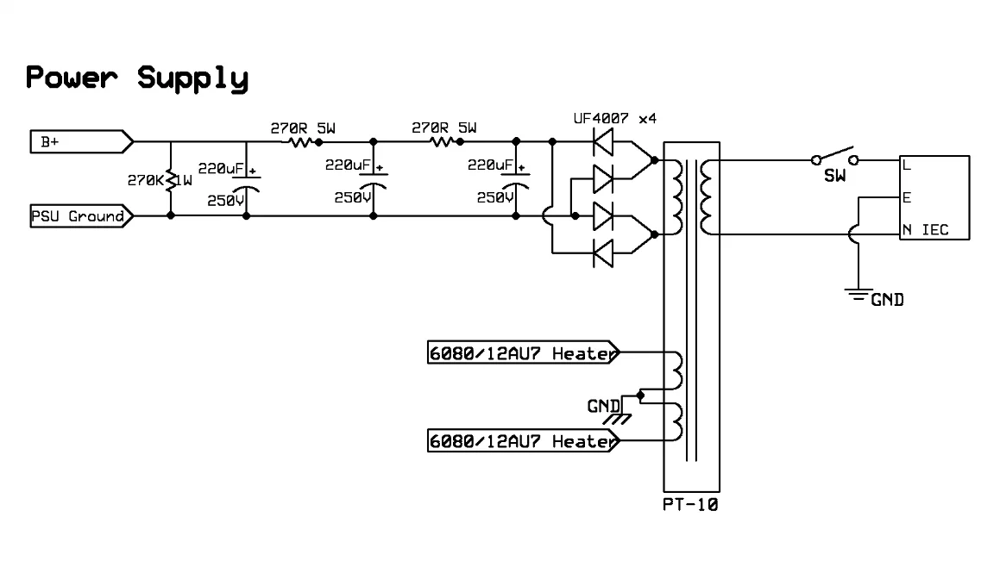
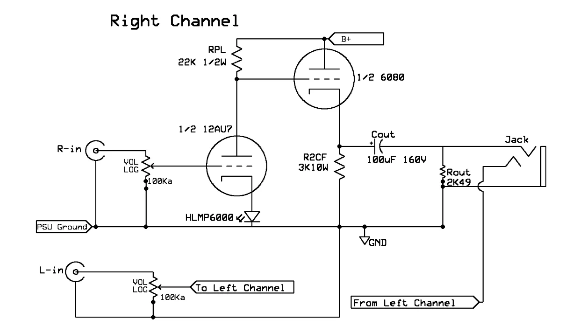

Overview
This project was a single-ended Output Transformerless (OTL) headphone amplifier built from a kit (Bottlehead), using a 12AU7 dual-triode input tube and a 6080 dual-triode output tube. OTL designs eliminate the output transformer found in most tube amps, coupling the output tube directly to the headphone load, which results in a simpler signal path and a different and more characteristic sound defined by the tube characteristics rather than transformer coloration.
Building this amplifier gave experience and understanding of analog audio signal paths from power supply through amplification to output, hands-on high-voltage soldering, and systematic circuit verification.


The Build
Power Supply
The power supply converts 120VAC power through a PT-10 power transformer, rectified by four UF4007 diodes in a full-bridge configuration to produce the B+ high-voltage rail (~170VDC). A three-stage C-R-C filter smooths the rectified DC, reducing ripple before it reaches the latter of the audio circuit. A 270KΩ 1W resistor discharges the capacitors when the amp is powered off.
Audio Circuit
The audio signal enters through RCA jacks into a 100KΩ potentiometer (for volume control), then into the 12AU7 input tube which provides the voltage gain. The amplified signal passes through a 3KΩ 10W coupling resistor to the 6080 output tube, which acts as a cathode follower, providing the desired current gain to drive the headphones. A 100μF/160V coupling capacitor blocks the DC component before the signal reaches the headphone jack through a 2.49KΩ output resistor. The left and right channels are independent, each using half of the dual-triode tubes.
Chassis Assembly and Soldering
All wiring is point-to-point on the terminal strips. This meant that I needed to plan wire routing carefully to keep signal paths short, high-voltage runs separated from signal wires, and ground connections safe to prevent ground loops. The chassis plate consisted of tube sockets, RCA jacks, the headphone jack, volume knob, power switch, and power entry.
Testing and Verification
Before powering on, every connection was verified with a multimeter, checking for continuity on intended paths. After powering-up, DC voltages were measured at key nodes to confirm that the tubes were biasing correctly and the power supply was delivering stable DC.
Results
The amplifier works and sounds great. It has the signature warm tube color that I was looking for. As for my choice of headphones, I paired the amp with the Sennheiser HD 650s to elevate the sound further. Building it from individual components gave me a deeper understanding of how each stage in an analog audio signal chain contributes to the final output. It also helped me build practical skills in high-voltage soldering safety, point-to-point wiring, and circuit debugging with a multimeter.